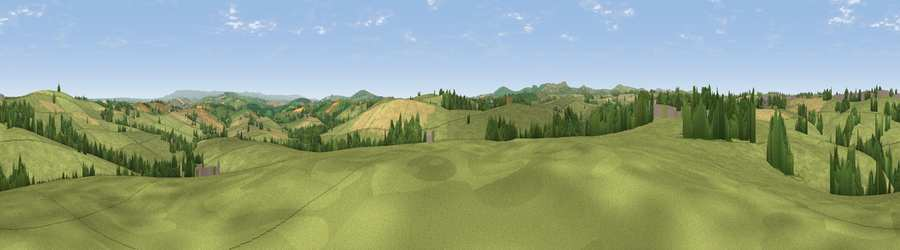

Viewpoint near South Petherwin
#20091 in England · top 38% of its area beats it · near South Petherwin · access?Where it is
The exact computed spot (SX 31125 80575). Click the marker for map links.
Public access: no public right of way or access land is recorded at this exact spot — it may be on private land. Computed from Natural England's CRoW access layer and OpenStreetMap rights of way — not the legal definitive map. Always verify locally.
The view, rendered

A 360° render of this exact spot computed from the terrain model, tree cover and land cover — summer colours, afternoon light, calibrated against photographs of famous viewpoints. Real trees, hedges and buildings will differ in detail.
The panorama
Grey silhouette: terrain skyline in each direction (720 bearings, Earth curvature and refraction included). Dashed green: skyline with trees (+15 m) and buildings (+8 m) as obstacles. Blue strip: how far the ground is visible on each bearing.
Where the view opens
Wedge length = distance to the farthest visible ground on that bearing (vegetation-aware). Rings at 10, 25 and 50 km.
What fills the view
79% grassland · 11% cropland · 10% woodland ·
Angular shares of the visible panorama (visual magnitude), not map area. Landscape diversity 0.30 (0–1 Shannon).
Key numbers
More beautiful places nearby
The staircase of upgrades: each row has a higher view potential than everything closer. Driving times are estimates from straight-line distance, calibrated against real road routing — check an actual route before setting out.
| Place | Direction | Drive | Score |
|---|---|---|---|
| Viewpoint near Trebullett | SSE · 1 km | ~3 min | 56.6 |
| Larrick Hill | S · 2 km | ~5 min | 60.1 |
| Viewpoint near North Hill | SW · 7 km | ~14 min | 64.7 |
| Hawk's Tor | SW · 7 km | ~14 min | 67.0 |
| Viewpoint near North Hill | WSW · 7 km | ~15 min | 68.6 |
| Viewpoint near Henwood | SW · 8 km | ~16 min | 76.2 |
| Viewpoint near Henwood | SSW · 10 km | ~19 min | 77.3 |
| Caradon Hill | SSW · 11 km | ~20 min | 78.5 |
50.60040, -4.38766 · source: screening · position refined by local search. Computed location — check access rights before visiting.